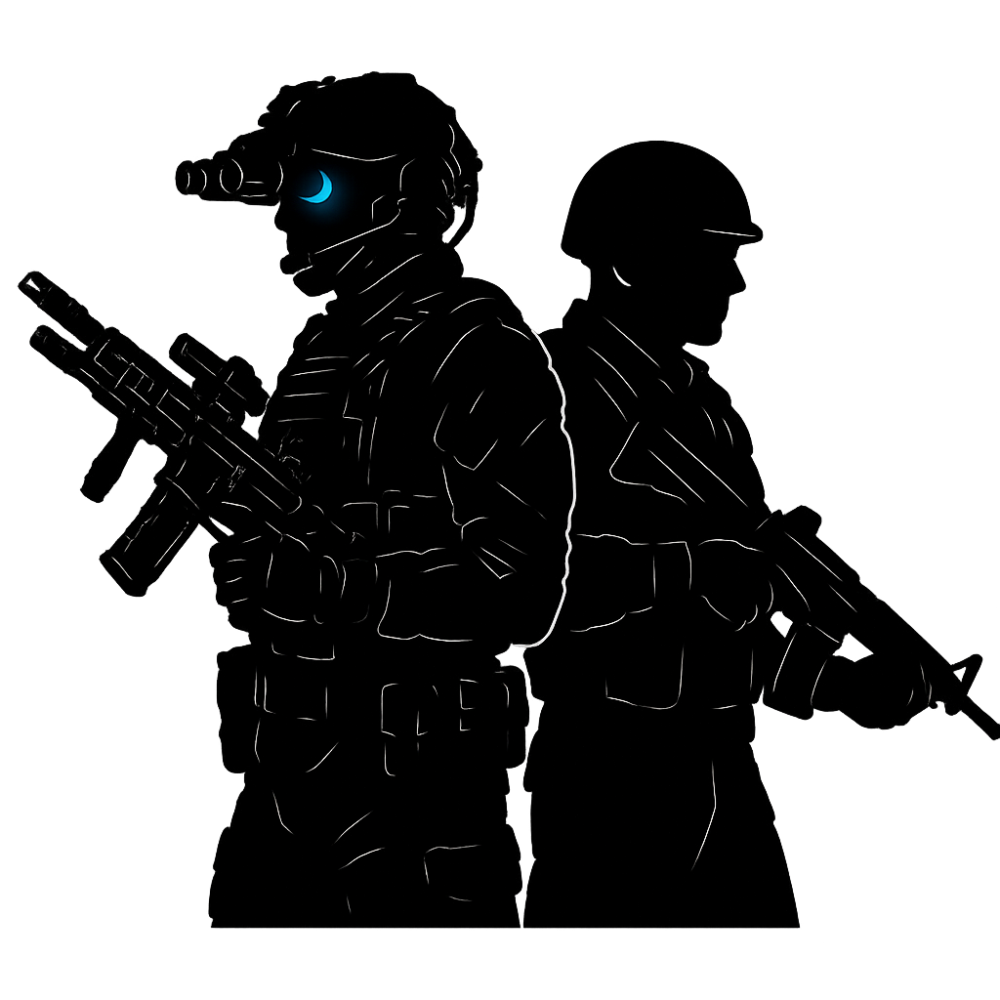

<section style="background-color: #1a1a1a; color: #ddd; padding: 50px 20px;">
  <div style="max-width: 1000px; margin: auto;">
    <h2 style="color: #FF4F00; text-align: center;">🔍 Sobre o Projeto</h2>
    <p style="line-height: 1.7; font-size: 1.1rem; text-align: center; max-width: 800px; margin: 20px auto;">
      O servidor <strong>Voices of the Dark</strong> é um projeto independente criado no motor do Garry's Mod, usando
      sistemas altamente modificados para transformar o sandbox tradicional em uma experiência tática intensa e imersiva.
      A proposta surgiu da vontade de unir a liberdade criativa do GMod com a profundidade e tensão de jogos de extração realistas.
    </p>

    <div style="margin-top: 30px; text-align: center;">
      <a href="#" style="color: #FF4F00; text-decoration: underline;">Acesse a Wiki do Projeto</a>
    </div>

    <h3 style="margin-top: 50px; color: #FF4F00;">👥 Equipe de Desenvolvimento</h3>
    <div style="display: flex; gap: 30px; flex-wrap: wrap; justify-content: center; margin-top: 20px;">
      <div style="background-color: #222; padding: 20px; border-radius: 10px; width: 220px; text-align: center;">
        
        <h4 style="margin: 10px 0;">Fireboy</h4>
        <p>Fundador & Desenvolvedor Principal</p>
      </div>
      <div style="background-color: #222; padding: 20px; border-radius: 10px; width: 220px; text-align: center;">
        
        <h4 style="margin: 10px 0;">Futuro Dev</h4>
        <p>Designer / Contribuidor</p>
      </div>
    </div>
  </div>


</section>
